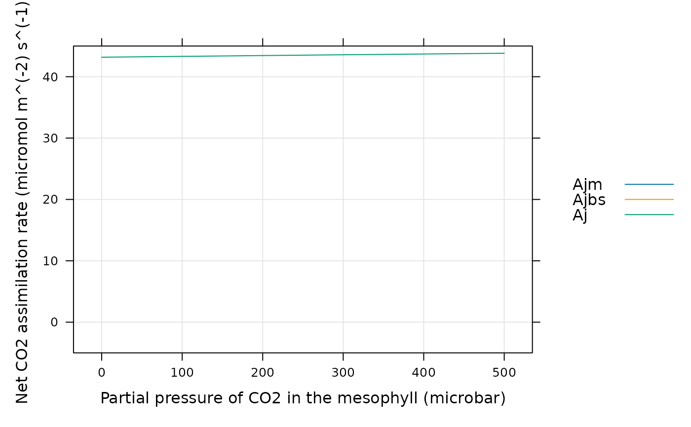

Calculate C4 assimilation rates
calculate_c4_assimilation.RdCalculates C4 assimilation rates based on the von Caemmerer (2000) model. This function can accomodate alternative colum names for the variables taken from Licor files in case they change at some point in the future. This function also checks the units of each required column and will produce an error if any units are incorrect.
Usage
calculate_c4_assimilation(
exdf_obj,
alpha_psii,
gbs,
J_at_25,
RL_at_25,
Rm_frac,
Vcmax_at_25,
Vpmax_at_25,
Vpr,
x_etr = 0.4,
ao_column_name = 'ao',
gamma_star_column_name = 'gamma_star',
j_norm_column_name = 'J_norm',
kc_column_name = 'Kc',
ko_column_name = 'Ko',
kp_column_name = 'Kp',
oxygen_column_name = 'oxygen',
pcm_column_name = 'PCm',
qin_column_name = 'Qin',
rl_norm_column_name = 'RL_norm',
total_pressure_column_name = 'total_pressure',
vcmax_norm_column_name = 'Vcmax_norm',
vpmax_norm_column_name = 'Vpmax_norm',
hard_constraints = 0,
perform_checks = TRUE,
return_exdf = TRUE
)Arguments
- exdf_obj
An
exdfobject.- alpha_psii
The fraction of photosystem II activity in the bundle sheath (
dimensionless). Ifalpha_psiiis not a number, then there must be a column inexdf_objcalledalpha_psiiwith appropriate units. A numeric value supplied here will overwrite the values in thealpha_psiicolumn ofexdf_objif it exists.- gbs
The bundle sheath conductance to CO2 in
mol m^(-2) s^(-1) bar^(-1). Ifgbsis not a number, then there must be a column inexdf_objcalledgbswith appropriate units. A numeric value supplied here will overwrite the values in thegbscolumn ofexdf_objif it exists.- J_at_25
The electron transport rate at 25 degrees C, expressed in
micromol m^(-2) s^(-1). Note that this is _not_Jmax, and in general will depend on the incident photosynthetically active flux density. IfJ_at_25is not a number, then there must be a column inexdf_objcalledJ_at_25with appropriate units. A numeric value supplied here will override the values in theJ_at_25column ofexdf_objif it exists.- RL_at_25
The total rate of mitochondrial respiration across the mesophyll and bundle sheath at 25 degrees C, expressed in
micromol m^(-2) s^(-1). IfRL_at_25is not a number, then there must be a column inexdf_objcalledRL_at_25with appropriate units. A numeric value supplied here will overwrite the values in theRL_at_25column ofexdf_objif it exists.- Rm_frac
The fraction of the total mitochondrial respiration that occurs in the mesophyll. If
Rm_fracis not a number, then there must be a column inexdf_objcalledRm_fracwith appropriate units. A numeric value supplied here will overwrite the values in theRm_fraccolumn ofexdf_objif it exists.- Vcmax_at_25
The maximum rate of rubisco carboxylation at 25 degrees C, expressed in
micromol m^(-2) s^(-1). IfVcmax_at_25is not a number, then there must be a column inexdf_objcalledVcmax_at_25with appropriate units. A numeric value supplied here will overwrite the values in theVcmax_at_25column ofexdf_objif it exists.- Vpmax_at_25
The maximum rate of PEP carboxylase activity at 25 degrees C, expressed in
micromol m^(-2) s^(-1). IfVpmax_at_25is not a number, then there must be a column inexdf_objcalledVpmax_at_25with appropriate units. A numeric value supplied here will overwrite the values in theVpmax_at_25column ofexdf_objif it exists.- Vpr
The rate of PEP carboxylase regeneration, expressed in
micromol m^(-2) s^(-1). IfVpris not a number, then there must be a column inexdf_objcalledVprwith appropriate units. A numeric value supplied here will overwrite the values in theVprcolumn ofexdf_objif it exists.- x_etr
The fraction of whole-chain electron transport occurring in the mesophyll (dimensionless). See Equation 29 from S. von Caemmerer (2021).
- ao_column_name
The name of the column in
exdf_objthat contains the dimensionless ratio of solubility and diffusivity of O2 to CO2.- gamma_star_column_name
The name of the column in
exdf_objthat contains the dimensionlessgamma_starvalues.- j_norm_column_name
The name of the column in
exdf_objthat contains the normalizedJmaxvalues (with units ofnormalized to Jmax at 25 degrees C).- kc_column_name
The name of the column in
exdf_objthat contains the Michaelis-Menten constant for rubisco carboxylation inmicrobar.- ko_column_name
The name of the column in
exdf_objthat contains the Michaelis-Menten constant for rubisco oxygenation inmbar.- kp_column_name
The name of the column in
exdf_objthat contains the Michaelis-Menten constant for PEP carboxylase carboxylation inmicrobar.- oxygen_column_name
The name of the column in
exdf_objthat contains the concentration of O2 in the ambient air, expressed as a percentage (commonly 21% or 2%); the units must bepercent.- pcm_column_name
The name of the column in
exdf_objthat contains the partial pressure of CO2 in the mesophyll, expressed inmicrobar.- qin_column_name
The name of the column in
exdf_objthat contains values of the incident photosynthetically active flux density inmicromol m^(-2) s^(-1).- rl_norm_column_name
The name of the column in
exdf_objthat contains the normalizedRLvalues (with units ofnormalized to RL at 25 degrees C).- total_pressure_column_name
The name of the column in
exdf_objthat contains the total pressure inbar.- vcmax_norm_column_name
The name of the column in
exdf_objthat contains the normalizedVcmaxvalues (with units ofnormalized to Vcmax at 25 degrees C).- vpmax_norm_column_name
The name of the column in
exdf_objthat contains the normalizedVpmaxvalues (with units ofnormalized to Vpmax at 25 degrees C).- hard_constraints
An integer numerical value indicating which types of hard constraints to place on the values of input parameters; see below for more details.
- perform_checks
A logical value indicating whether to check units for the required columns. This should almost always be
TRUE. The option to disable these checks is only intended to be used whenfit_c4_acicalls this function, since performing these checks many times repeatedly slows down the fitting procedure.- return_exdf
A logical value indicating whether to return an
exdfobject. This should almost always beTRUE. The option to return a vector is mainly intended to be used whenfit_c4_acicalls this function, since creating anexdfobject to return will slow down the fitting procedure.
Details
General Description of the Model
This function generally follows Sections 4.2.1 and 4.2.2 from S. von Caemmerer
(2000), which provides equations for calculating the enzyme-limited net
assimilation rate Ac, the light- and electron-transport limited rate
Aj, and the overall net assimilation rate An in a C4 leaf.
(These equations are also reproduced in S. von Caemmerer (2021), although we
use the equation numbers from the 2000 textbook here. Also note there is a
typo in Equation 22 from the 2021 paper.) The enzyme-limited assimilation rate
in this model is calculated according to Equation 4.21:
Ac = (-b - sqrt(b^2 - 4 * a * c)) / (2 * a)
where the parameters a, b, and c are determined by
Equations 4.22, 4.23, and 4.24, respectively. These equations are fairly long,
so we do not reproduce them here. Similarly, the light-limited rate Aj
is also calculated according to a quadratic equation. Finally, the overall
rate is calculated as the smaller of Ac and Aj:
An = min(Ac, Aj)
An Approximation to the Full Equations
The complicated equations above can be approximiated by simpler ones. For
Ac, we can use Equation 4.25:
Ac = min(Vp + gbs * PCm - RLm, Vcmax - RL)
where Vp is the rate of PEP carboxylation, gbs is the bundle
sheath conductance to CO2, PCm is the partial pressure of CO2 in the
mesophyll, RLm is the rate of mitochondrial respiration occuring in the
mesophyll, Vcmax is the maximum rate of Rubisco carboxylation, and
RL is the rate of mitochondrial respiration occurring in the bundle
sheath and mesophyll. Essentially, the first term in the equation above
(Vp + gbs * PCm - RLm) can be thought of as a PEP-carboxylase-limited
assimilation rate Ap, while the second term (Vcmax - RL) is a
Rubisco-limited rate Ar.
The PEP carboxylation rate Vp is calculated according to Equation 4.19:
Vp = min(Pcm * Vpmax / (PCm + Kp), Vpr)
where Vpmax is the maximum rate of PEP carboxylation, Kp is a
Michaelis-Menten constant for PEP carboxylation, and Vpr is the
carboxylation rate when PEP carboxylase activity is limited by regeneration
rather than carbon availability. Thus, we can see that the approximation above
actually calculates the enzyme-limited rate as the smaller of three separate
assimilation rates:
Ac = min(Apc, Apr, Ar)
where Apc = Pcm * Vpmax / (PCm + Kp) + gbs * PCm - RLm is the rate due
to carbon-limited PEP carboxylation, Apr = Vpr + gbs * PCm - RLm is the
rate due to regeneration-limited PEP carboxylation, and Ar = Vcmax - RL
is the rate due to Rubisco-limited assimilation.
In the example at the end of this documentation page, we compare Apc,
Apr, and Ar to Ac as calculated by Equation 4.21. From
this example, it is clear that the approximation Ac = min(Apc, Apr, Ar)
is quite accurate for low values of PCm, but introduces significant
errors as PCm increases. Thus, while the approximation can be helpful
for gaining an intuitive understanding of C4 photosynthesis, it should not be
used for realistic calculations.
To be more precise, the approximation is only reliable when Vcmax is
much larger than gbs * Kc * (1 + POm / Ko), which is rarely the case;
otherwise, the limiting value of An at high PCm will be smaller
than Ar = Vcmax - RL. Conversely, if gbs and alpha_psii
are both set to zero, then the approximation is exact.
For Aj, the simplified version is Equation 4.45:
Aj = min(x_etr * J / 2 - RLm + gbs * PCm, (1 - x_etr) * J / 3 - RL)
where x_etr is the fraction of whole-chain electron transport occurring
in the mesophyll and J is the electron transport rate. We can therefore
think of this equation as
Aj = min(Ajm, Ajbs)
where Ajm is the mesophyll light-limited rate and Ajbs is the
bundle sheath light-limited rate. These are given by
Ajm = x_etr * J / 2 - RLm + gbs * PCm and
(1 - x_etr) * J / 3 - RL As in the case with Ac, this
approximation is not exact.
Combining these two simplifications, we can see that the overall net assimilation rate can be approximated as the smallest of five potential rates:
An = min(Apc, Apr, Ar, Ajm, Ajbs).
Here it is very important to note that some of these potential rates have
identical or similar dependence on PCm. More specifically, Apr
and Ajm have identical dependence, as do Ar and Ajbs.
If gbs is zero, all four of these rates have no dependence on
PCm. Thus, from a fitting point of view, it is not usually possible to
distinguish between these potential limiting states. For this reason, it is
not advisable to fit more than one of Vcmax, Vpr, and
Jmax when estimating parameters from an experimentally measured curve.
Limiting Cases of the Approximate Equation
The bundle sheath conductance gbs is generally very small and can be
ignored in a simple analysis of the above equations. In that case, when
Pcm is very high, the approximate equation for Ac simplifies
further to:
Ac = min(Vpmax - RLm, Vpr - RLm, Vcmax - RL)
Since respiration costs are also generally much smaller than the maximum
enzyme activity and regeneration rates, the enzyme-limited assimilation rate
at high levels of CO2 is therefore determined by the smaller of Vpmax,
Vpr, and Vcmax. As shown in Table 4.1 of the textbook,
Vpmax is typically much larger than the other two rates, so light- and
CO2-saturated assimilation in C4 leaves is usually limited by either
Vpr or Vcmax. The exact limiting factor can depend on many
possible variables, such as the temperature. For example, see Wang (2008).
At lower values of PCm, enzyme-limited net assimilation is determined
by CO2-limited PEP carboxylation according to:
An = PCm * Vpmax / Kp - RLm
where we have approximated gbs * PCm = 0 and PCm + Kp = Kp, as
appropriate for small values of Pcm. Thus, we can see that for low CO2
levels, assimilation is linearly related to PCm with a slope of
Vpmax / Kp and intercept of -RLm.
Respiration
Table 4.1 from von Caemmerer (2000) suggests that RL = 0.01 * Vcmax and
RLm = 0.5 * RL. To allow more flexibility, we allow RL to be
specified independently of Vcmax, and we also consider the ratio of
RLm / RL = Rm_frac to be a variable (so that RLm is calculated
from RL according to RLm = Rm_frac * RL). If Rm_frac is
set to 1, then there is no distinction between RL and RLm.
Hard constraints:
Most input parameters to the C4 assimilation model have hard constraints on
their values which are set by their biochemical or physical interpretation;
for example, Vcmax cannot be negative and alpha_psii must lie
between 0 and 1. Yet, because of measurement noise, sometimes it is necessary
to use values outside these ranges when fitting an A-Ci curve with
fit_c4_aci. To accomodate different potential use cases, it is
possible to selectively apply these hard constraints by specifying different
values of the hard_constraints input argument:
hard_constraints = 0: Constraints are only placed on inputs that are user-supplied and cannot be fit, such asKc.hard_constraints = 1: Includes the same constraints as whenhard_constraintsis 0, with the additional constraint that allPCmvalues must be non-negative.hard_constraints = 2: Includes the same constraints as whenhard_constraintsis 1, which additional constraints on the parameters that can be fitted. For example,Vcmax_at_25must be non-negative andalpha_psiimust lie between 0 and 1.
If any input values violate any of the specified constraints, an error message will be thrown.
References
von Caemmerer, S. "Biochemical Models of Leaf Photosynthesis" (CSIRO Publishing, 2000) [doi:10.1071/9780643103405 ].
von Caemmerer, S. "Updating the steady-state model of C4 photosynthesis." Journal of Experimental Botany 72, 6003–6017 (2021) [doi:10.1093/jxb/erab266 ].
Wang, D., Portis, A. R., Jr., Moose, S. P. & Long, S. P. "Cool C4 Photosynthesis: Pyruvate Pi Dikinase Expression and Activity Corresponds to the Exceptional Cold Tolerance of Carbon Assimilation in Miscanthus × giganteus." Plant Physiology 148, 557–567 (2008) [doi:10.1104/pp.108.120709 ].
Value
The return value depends on the value of return_exdf:
If
return_exdfisTRUE, the return value is anexdfobject with the following columns:alpha_psii,gbs,J_at_25,Jmax_tl,J_tl,Rm_frac,Vcmax_tl,Vpmax_tl,RL_tl,RLm_tl,Vpc,Vpr,Vp,Apc,Apr,Ap,Ar,Ajm,Ajbs,Ac,Aj,An, andc4_assimilation_msg. Most of these are calculated as described above, while several are copies of the input arguments with the same name. Thec4_assimilation_msgis usually blank but may contain information about any issues with the inputs. The category for each of these new columns iscalculate_c4_assimilationto indicate that they were created using this function.If
return_exdfisFALSE, the return value is a numeric vector containing the calculated values ofAn.
Examples
# Simulate a C4 A-Cm curve with specified leaf temperature and photosynthetic
# parameters and plot the net assimilation rate.
npts <- 101
inputs <- exdf(data.frame(
PCm = seq(0, 500, length.out = npts),
Tleaf = 25,
Qin = 1800,
total_pressure = 1,
oxygen = 21
))
inputs <- document_variables(
inputs,
c('', 'PCm', 'microbar'),
c('', 'Tleaf', 'degrees C'),
c('', 'Qin', 'micromol m^(-2) s^(-1)'),
c('', 'total_pressure', 'bar'),
c('', 'oxygen', 'percent')
)
inputs <- calculate_temperature_response(inputs, c4_temperature_param_vc, 'Tleaf')
assim <- calculate_c4_assimilation(inputs, 0, 0.003, 250, 1, 0.5, 40, 200, 80)
# Now we can plot Ac, Apr, Apc, and Ar. From this plot, we can see that
# replacing the complicated quadratic equation with a simple minimum yields
# very different results. Although this approximation is helpful for
# understanding C4 photosythesis, it should not be used for calculations.
lattice::xyplot(
Apr + Apc + Ar + Ac ~ PCm,
data = cbind(inputs, assim)$main_data,
type = 'l',
grid = TRUE,
auto = TRUE,
ylim = c(-5, 100),
xlab = paste0('Partial pressure of CO2 in the mesophyll (', inputs$units$PCm, ')'),
ylab = paste0('Net CO2 assimilation rate (', assim$units$An, ')')
)
# Likewise, we can look at Ajm, Ajbs, and Aj
lattice::xyplot(
Ajm + Ajbs + Aj ~ PCm,
data = cbind(inputs, assim)$main_data,
type = 'l',
grid = TRUE,
auto = TRUE,
ylim = c(-5, 45),
xlab = paste0('Partial pressure of CO2 in the mesophyll (', inputs$units$PCm, ')'),
ylab = paste0('Net CO2 assimilation rate (', assim$units$An, ')')
)

# Finally, we can see whether enzyme activity or light limits overall
# assimilation. In this case, assimilation is always enzyme-limited.
lattice::xyplot(
Ac + Aj + An ~ PCm,
data = cbind(inputs, assim)$main_data,
type = 'l',
grid = TRUE,
auto = TRUE,
ylim = c(-5, 40),
xlab = paste0('Partial pressure of CO2 in the mesophyll (', inputs$units$PCm, ')'),
ylab = paste0('Net CO2 assimilation rate (', assim$units$An, ')')
)